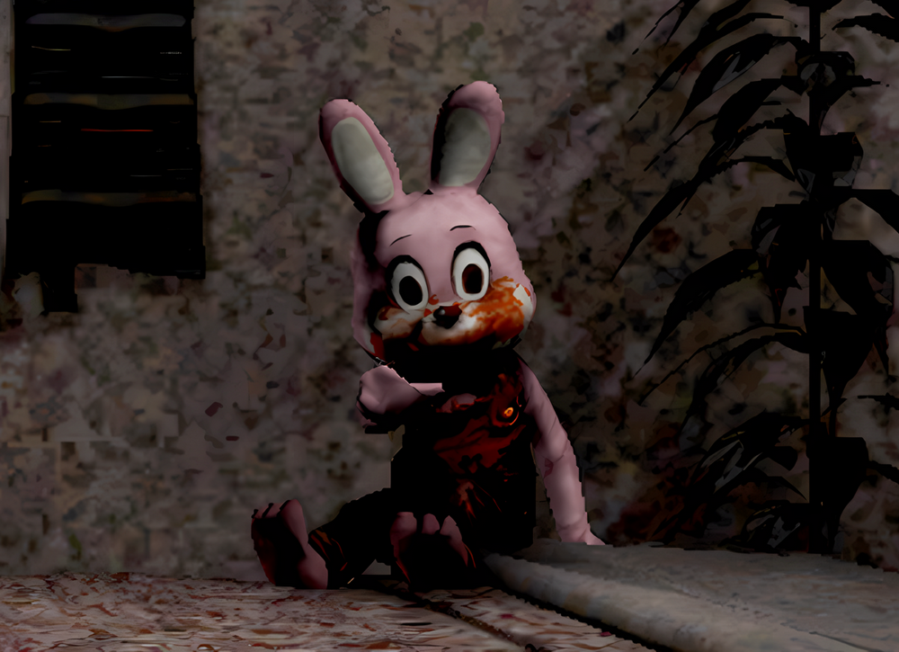
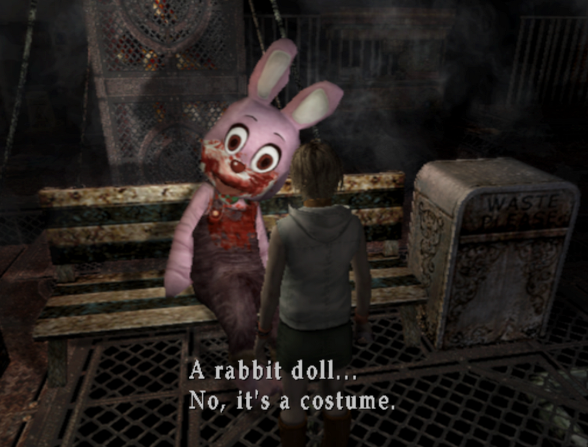
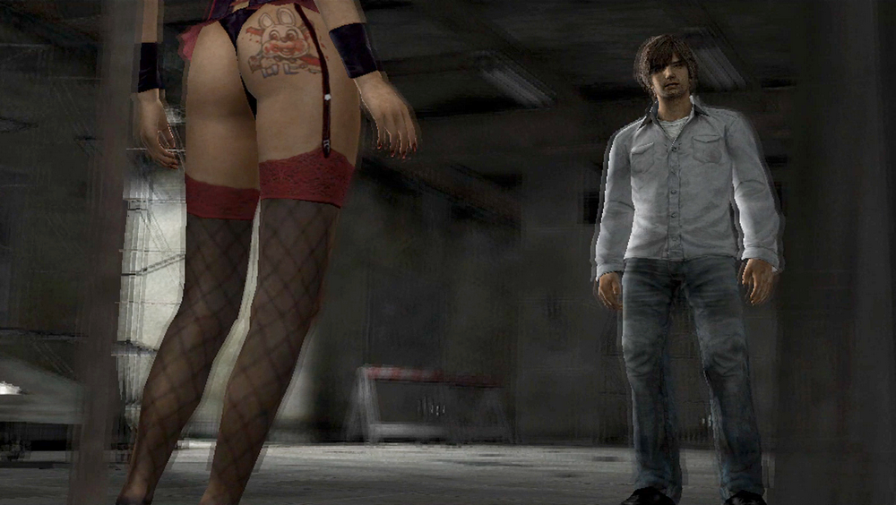
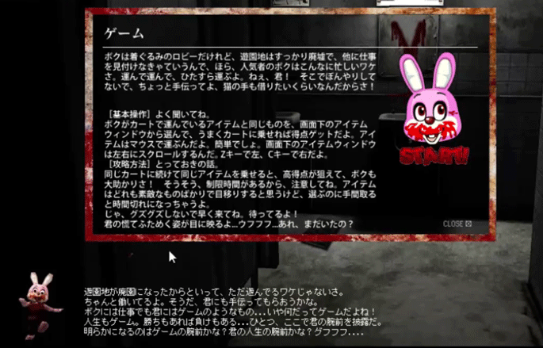
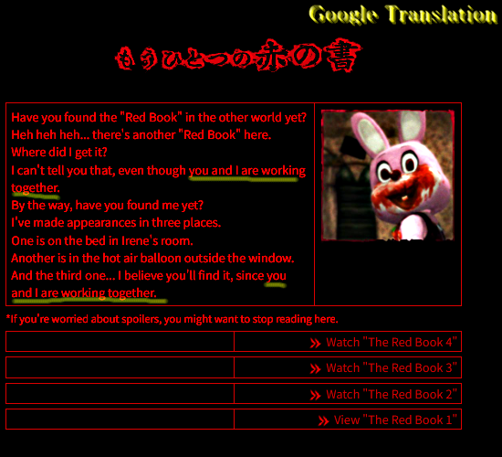
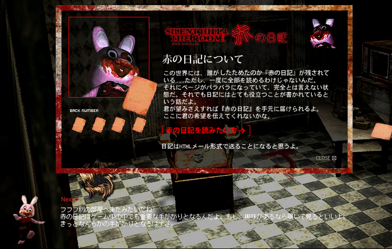
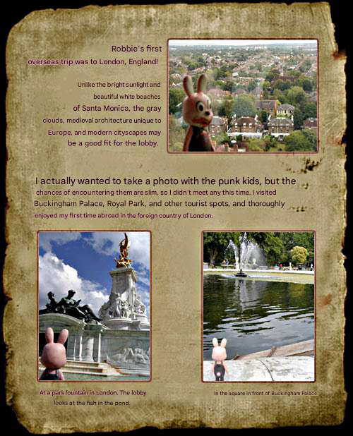
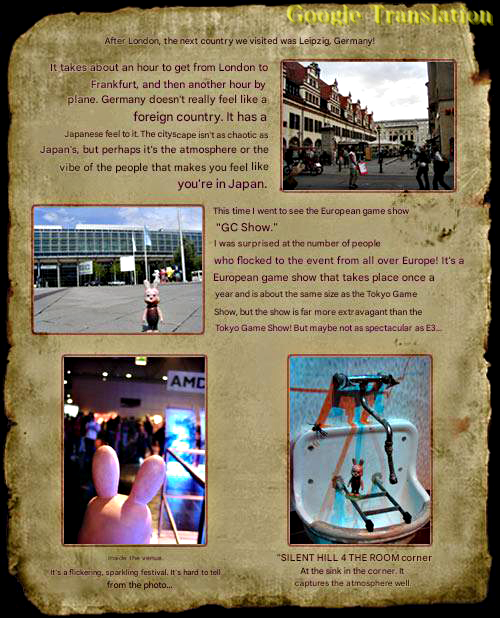
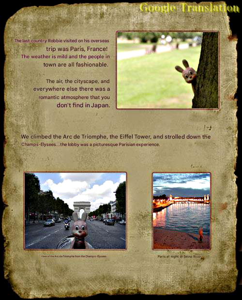
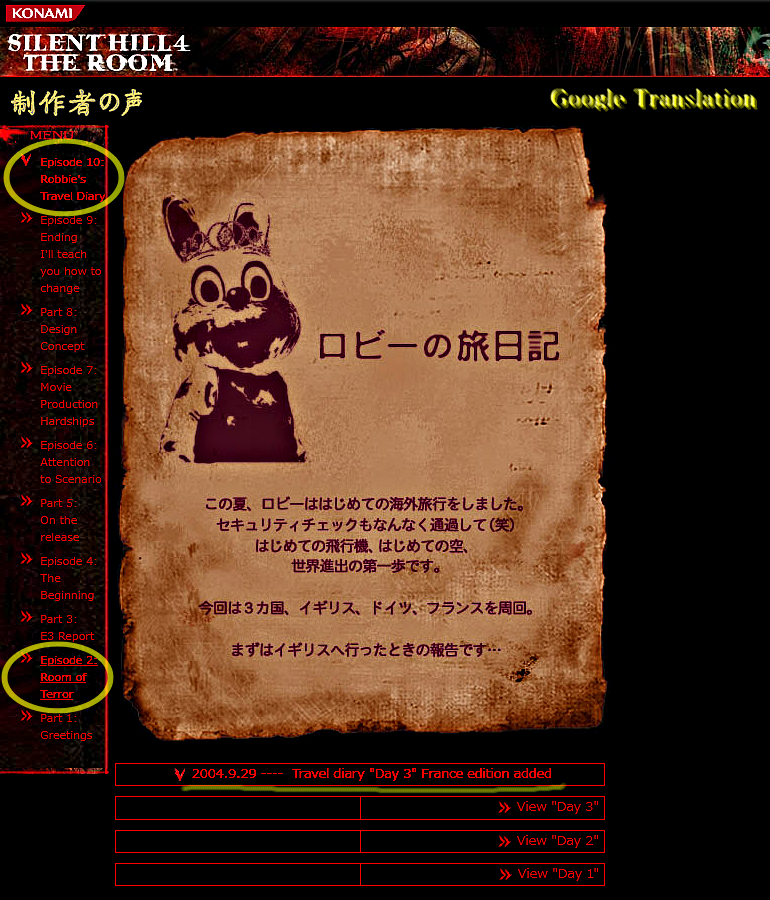

[SH4] Robbie the Rabbit Knows Everything

Vol. 10: "Robbie the Rabbit's Travel Diaries"
![[SH4] Robbie the Rabbit Knows Everything](img/da44.png)
This is a mirror of the DeviantArt version linked above, provided as a backup and for easier access.

🌐制作者の声「第10回:ロビーの旅日記」
From Konami SILENT HILL 4 THE ROOM, Developer's Voice" Vol. 10: Robbie the Rabbit's Travel Diaries"
https://web.archive.org/web/20070811061926/http://www.konami.jp/gs/game/sh4/roomq.html
It might seem a bit mysterious why Robbie the Rabbit (Robbie-kun) is listed last among the "Developer's Voice," lol, but he first appeared in Silent Hill 3, and he also shows up in Silent Hill 4. He played an important role in both works, not only in the main games but also in promotional activities!

(As a side note, his gender hasn't been officially revealed, but in Japanese his name includes the honorific "-kun," which is typically used for boys, and he uses "boku" as his first-person pronoun, which is also more commonly used by boys. Because of this, he's generally assumed to be male in Japan, so I refer to him as "he.")
Cynthia has a tattoo on her butt with Robbie-kun's face and the name "ロビー" written in Japanese.

✅ Robbie-kun steals the show
As for SH4, before the release, he served as the navigator on the Japanese official website "SH2004 . com." He's the one spinning around in the bottom left.

He was the one who introduced the "Another Crimson Tome (もうひとつの赤の書)" on the official website, too. His catchphrase, "You and I are working hand in hand (僕と君は二人三脚)," is used frequently as well.

Also, he sent the email newsletter only to Japanese subscribers. His emails always begin with something like "To you, my dear (親愛なる君へ)." Parts of it have been translated and posted on the Silent Hill Wiki, but it also fills in the missing parts of the Red Diaries and contains some fairly important info.

✅ Robbie the Rabbit's Travel Diaries
This article also mentions that he went on his first trip to Europe. Honestly, it's not very important and has nothing to do with the main topic at all, haha. But since it was an image and therefore hadn't been translated on the Silent Hill Wiki, I included a translation just in case.



A quick explanation of the contents: In the summer of 2004, after the release in Japan, Robbie-kun went on his first trip to Europe. He visited three countries, England, Germany, and France.
- In England, he visited places like Buckingham Palace—just normal sightseeing.
- In Germany, he says he went to the "GC Show." This was probably the main reason.
- In France, he visited places like the Arc de Triomphe and the Eiffel Tower, again just normal sightseeing.
✅ Game Convention 2004 – Leipzig, Germany August 19–22, 2004
Apparently this was a German game convention that existed from around 2002 to about 2010. Since you can find things like articles about the METAL GEAR series or the Resident Evil series if you google it, many people from Japanese game companies probably went there. This was probably the main purpose of Robbie-kun's trip.
By the way, I think the interview that may be the common source for the Eurogamer and Boomtown articles on the "302 theory" may also have originated around this period.
In a later interview released on September 6 by another British company, they said that they had come to watch the (Greek) Olympics. It's true that the devs were in Europe at the time.
✅ Does Robbie-kun back up the website's claim?!
As I mentioned at the beginning, Robbie-kun's page appears at the very end of the "Developer's Voice" section. In the second installment of this series, there's also an interview with Murakoshi-san, where the statement "SH4 was developed as a new Silent Hill series" is clearly described in the official account of SH4. I've brought that up multiple times before, though...

In other words, this also serves as evidence that by the time Robbie-kun went to Europe that summer, and when the two interview articles mentioned above were published, the correct official statement was already available. You can just check the dates on the Web Archive, anyway.
At first glance it just looks like a travel diary, but considering the timing, I feel it's an article that makes you think about various things from a historical perspective.